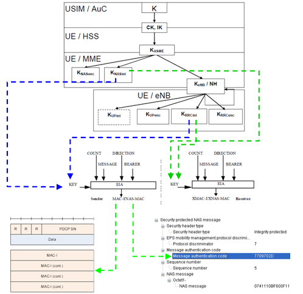

|
LTE Basic Procedure Go Back To Index Home : www.sharetechnote.com |
|
|
Integrity Protection Process
My perception of any process is "a black box that convert a set of inputs into a set of output". So for any process, I usually tries to define what is the inputs and out is the final outputs.. and then try to find the all of the steps one by one to convert the input into the outputs.
If I define LTE Integrity Protection Procedure with this logic, it would be "a process that convert 'K' value from USIM into PDCP MAC-I and NAS MAC(Message Authentication Code)". Describing this process with illustration would be as follows. Just try to go through this illustration whenever you have chance and try to have your own idea first. The process described here apply only to C-Plane data. (Refer to 33.401 for the detailed description of each of the steps).

|